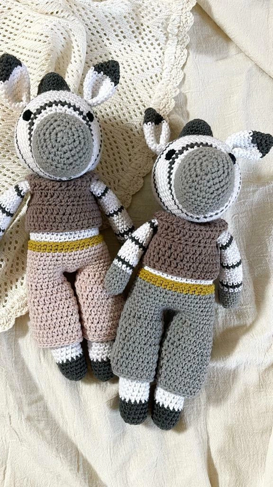

AMIGURUMI
Tendencia japonesa que consiste en tejer pequeños muñecos mediante técnicas de crochet.

Los Amigurumis vienen de una tradición artesana en Japón y forma parte de la cultura de lo Kawaii, que se traduce como adorable, muy tierno y bonito,persiguen alimentar el espíritu del niño que todos llevamos dentro. Según la tradición japonesa cada Amigurumi posee un alma, que nos acompañará siempre y se convertirá en el amiguito inseparable desde niño usándolo como confidente de por vida, proporcionándole protección y consuelo.